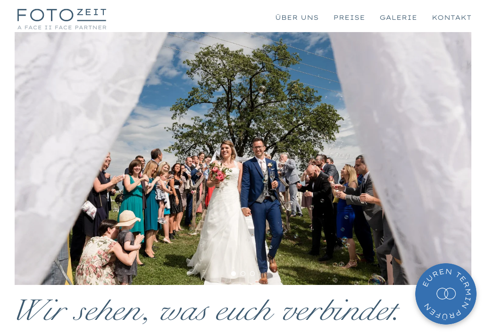

Fotozeit wollte keine Website, sondern Paare von ihrem hochwertigen Service überzeugen. Fünf Anfragen in den ersten Wochen.
Wir alle wollen eigentlich Menschen von unserer Idee überzeugen und Anfragen erhalten.
Das ist bei all den Websites da draußen gar nicht so einfach.
Um wirklich herauszustechen, braucht es heute eine simple, aber geniale Idee, um Aufmerksamkeit zu erlangen.
Und sobald man die Aufmerksamkeit hat, braucht es eine Website, die diese in Kund:innen verwandelt.
Und genau das machen wir.